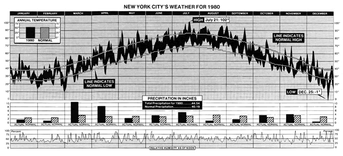
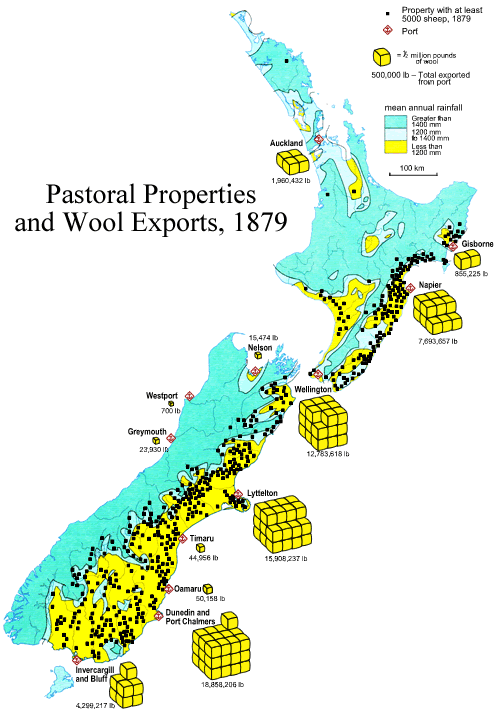

Multiple simple graphs
Many publications only include simple graphical displays of data such as bar charts and time series. It is easy to confuse the reader by incorporating too much information in a graphic, but simple graphics can sometimes be combined in rich ways that encourage the reader to investigate the relationships between different measurements.
To be effective, the different elements of the display should usually be linked to either a time axis (e.g. a collection of related time series drawn against a common time axis) or a map (e.g. pie charts drawn next to each region).
Consider whether different information can be linked in a single display.
When planning any such diagram, critically consider whether it may be too complex to be easily understood by the intended audience.
New York weather in 1980
The following diagram was published in the New York Times to describe the weather in 1980.

This diagram was commended by Edward Tufte as a graphic that is extremely rich in data but is still easily understandable. It shows:
The format encourages the reader to look for relationships between temperature, rainfall and humidity. For example, the daily temperature range (maximum – minimum) was typically lower in the winter than in the summer (shaded vertical distance between the minimum and maximum time series). Also, the period from late August to early September was much warmer than normal. (Both maximum and minimum daily temperatures tended to be higher than normal during this period.)
Also note the use of annotations to indicate the warmest and coldest days in the year.
New Zealand wool exports in 1879
The next example is a map that appeared in the Bateman New Zealand Historical Atlas to present information about wool production and exports in New Zealand in 1879. It effectively shows:
The eye is encouraged to investigate the relationship between the location of sheep farms, the climate and ports.

(The use of 3-dimensional piles of wool bales to represent exports might be criticised but the scale — 500,000 lb of wool per bale — means that it is unlikely to mislead here.)